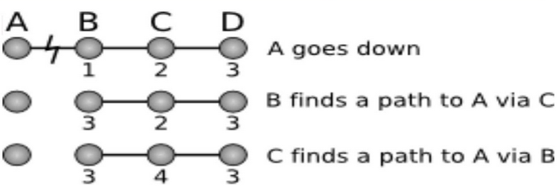

Лекция 5. Роутинг
Как мы говорили на первой лекции, компьютеру/роутеру нужна таблица, чтобы знать, какие пакеты отправлять в какую сторону. В рамках домашней сети это просто, но для провайдера задача построения таблицы будет не простая.
Способы построения таблиц:
- Статический - в рамках маленькой сети/дома можно руками построить таблицу.
- Link state - строится полная карта сети.
- Distance vector - используется только информация о локальном участке сети.
- Software-defined networks - если можно на компьютере запустить программу, которая соберет всю информацию о сети, запустит алгосики, примет все решения и загрузит эту информацию на все устройства в сети.
В большинстве сетей используется link state или distance vector.
RIP (Routing Information Protocol)
Пусть в сети есть маршрутизатор, который знает, как отдать пакеты в сеть 1.0.0.0/24. Оно расскажет своим соседям, что умеет доставлять пакеты в 1.0.0.0/24 с путём длиной 0 узлов. Соседи этого маршрутизатора тогда узнают, что они могут доставлять пакеты в 1.0.0.0/24 с путём длиной в 1 узел, если отправить в тот маршрутизатор. Соседи также распространят эту информацию дальше, при различных длинах пути выбирается путь с минимальной длиной.
В RIP расстояние 4-битовое, при этом 1111 выделено как недостижимое значение. Поэтому RIP применим только в сетях с диаметром \(\le 14\).
Когда мы посылаем сообщение соседям, что мы знаем?
- Если к нам подключили новое устройство
- Нас попросили это сделать
- По таймеру (обычно 30с)
Есть проблема — злоумышленник может сказать, что у него до всех адресов расстояние 0 и скушать все пакеты в сети. Это не чинится.
Допустим, некоторый узел пропал из сети. Соседние с ним узлы поймут об этом либо по таймауту, либо линк об этом сообщит. Тогда соседние узлы пересчитывают свои маршруты и не посылают больше пропавшему узлу пакеты.
У нас есть проблема count to infinity, когда при пропаже узла мы будем по старой информации пересчитывать и находить путь, которого нет. 
Есть частичное решение — если узел A сказал узлу B, что у него есть путь до C, то B никогда не скажет узлу A об этом пути. Оно не всегда работает.
Есть ещё одна защита — если узел узнал, что B пропал, то он говорит соседям, что расстояние до B - 16, т.е. он недостижим.
В реальной жизни RIP уже не используется.
OSPF (Open Shortest Path First)
Каждый узел строит карту сети и запускает Дейкстру. Важная идея — если у всех узлов одинаковая карта, то каждый узел может принять локальное решение. OSPF может работать в сетях до 10000 узлов (примерно).
Есть одна проблема — сообщение о том, что линк пропал, доходит не мгновенно, поэтому у узлов происходит рассинхрон по карте.
Мы не обязаны строить карту всей сети. Можно разделить сеть на зоны и для каждой зоны будет своя карта с некоторыми "мостами" между ними.
IS-IS
Похож на OSPF, но работает не поверх IP, а через CLNS (не обязательно знать, что это).
BGP
OSPF нельзя использовать на всю планету, т.к.:
- Карта сети не влезает в память.
- Мы не хотим, чтобы все в мире знали внутреннее устройство сетей.
BGP - протокол, работающий в интернете, который оперирует абстракцией автономной системы. Автономная система — организация, в который есть некоторые соединенные устройства и есть внешние маршрутизаторы, для которых внутренности сетей не различимы. Таким образом мы стягиваем автономные системы в одну вершину, похоже на конденсацию графа.
У каждой автономной системы есть номер - 16-битное число от IANA.
Сам алгоритм похож на RIP на автономных системах вместо узлов, но системы рассказывают друг другу не расстояния, а сами пути.
Выбор пути производится по следующим правилам (правила с меньшим номером приоритетнее):
- Локальные административные критерии.
- Длина пути (в количесте автономных систем).
- т.д. (не будем рассматривать)
Проблема Count to infinity решается тривиально — отбрасываются маршруты, которые проходят через себя.
Проблема того, что информация о потере узла не приходит мгновенно, неисправима.
С путём также можно передавать метаданные в виде a:b, где a — номер автономной системы, которая прикрепила данные
, и b — код сообщения, которое эта система передает.
Нет универсального соглашения об этих кодах, нужно договариваться с соседями вручную.
Looking glass - сервис, который предоставляют многие системы, который позволят посмотреть информацию BGP.
Если некоторая система A хочет предпочитать одно соединение с другой системой вместо другого, то она может по одному соединению слать путь A, а по другому путь A-A-A. Этот хак очень распространён.